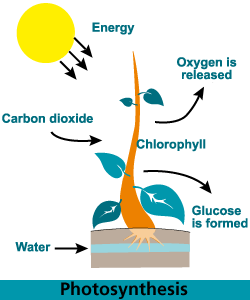

Reaksi Fotosintesis
(Reaksi Photosintesis)
ada umumnya, tumbuhan memerlukan karbondioksida dan air serta cahaya matahari untuk menghasilkan glukosa (glucose) atau gula dan oksigen.
Tanpa kedua komponen tersebut maka tumbuhan tidak dapat berkembang dan proses fotosintesis tidak dapat berjalan

Persamaan reaksi fotosintesis(photosynthethic reaction)dapat ditulis sebagai berikut:

6H2O + 6CO2 + cahaya → C6H12O6 + 6O2
keterangan adalah:
H2 = air
CO2 = karbondioksida
C6H12O6 = gula atau glukosa
O2 = oksigen
Sumber:ruangguru